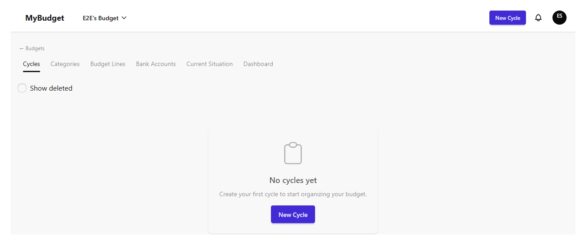
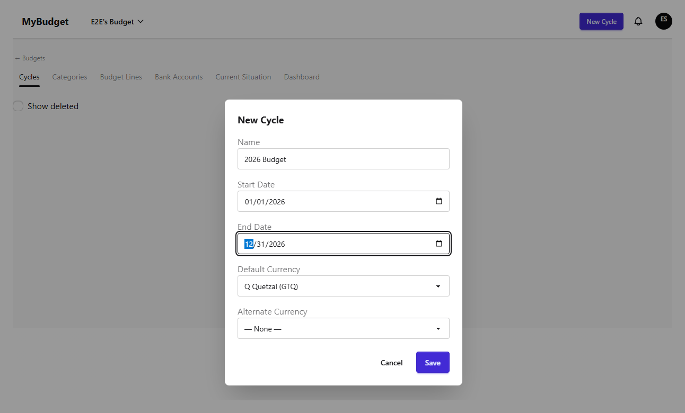
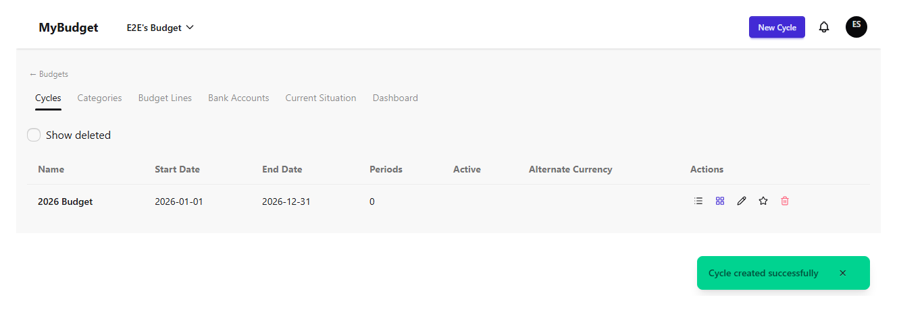
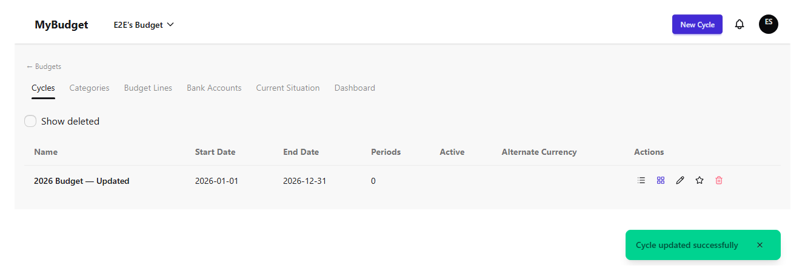
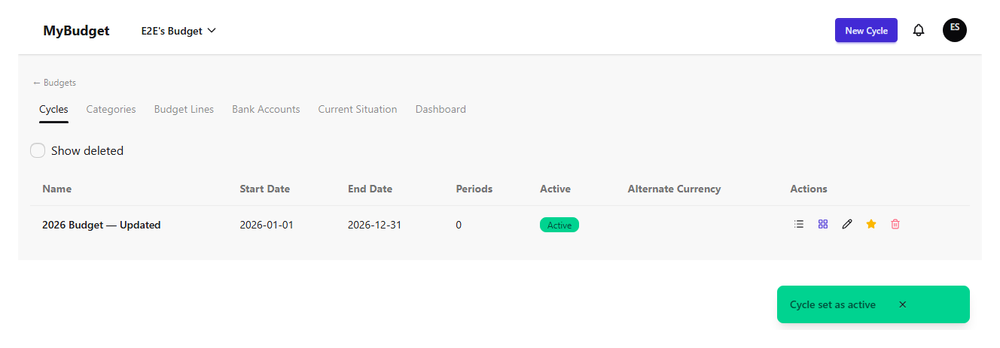
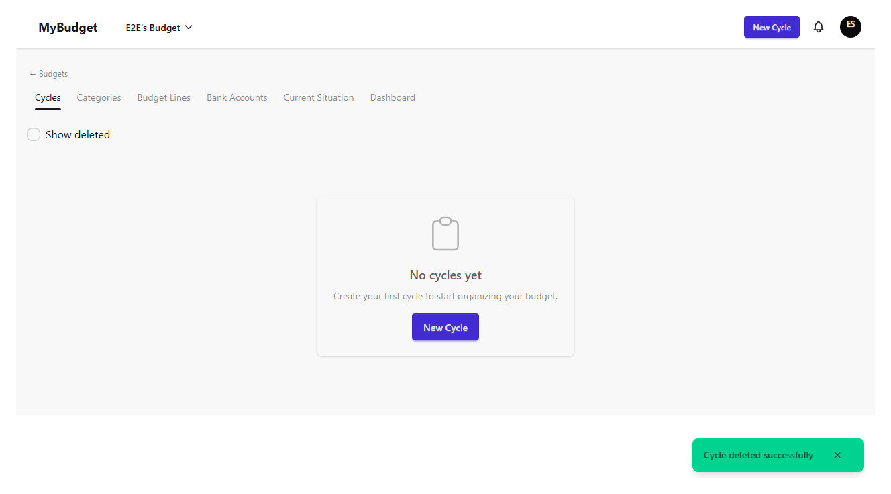

Cycles
A cycle is a bounded time period inside a budget — typically a month or a year — that holds its own periods, budget lines, and execution matrix. Every budget starts with an empty cycle list; this chapter covers creating, editing, activating, deleting, and restoring cycles.
The cycle list
Open a budget to see its cycles table: name, start date, end date, number of periods, whether the cycle is the active one, and its alternate currency if one is set. A freshly created budget shows an empty state instead of the table, with a shortcut to create the first cycle.

Creating a cycle
Admins and the owner can create a cycle with a name, a start date, and an end date. A cycle can also set a default currency and, optionally, an alternate currency with an exchange rate — either both fields are filled in together, or both are left empty. Cycle names must be unique within the same budget.


Editing a cycle
Double-click a cycle's name, start date, or end date to edit it inline, or use the pencil icon to open the full edit form (which also exposes the currency fields). Editing checks the same uniqueness and currency-pairing rules as creation.

Setting the active cycle
Exactly one cycle per budget can be marked active, shown with a green "Active" badge. The active cycle is the one the budget execution matrix opens to by default, so switching it is how you move the whole team's attention from one period to the next.

Deleting and restoring a cycle
Deleting a cycle is a soft delete behind a confirmation dialog — its periods, lines, and execution history are preserved, not destroyed. Turning on "Show deleted" reveals removed cycles with a "Deleted" badge and a Restore action.
